VALG AF STIL
= FLAT-DESIGN 2
PAPER PROTOTYPE
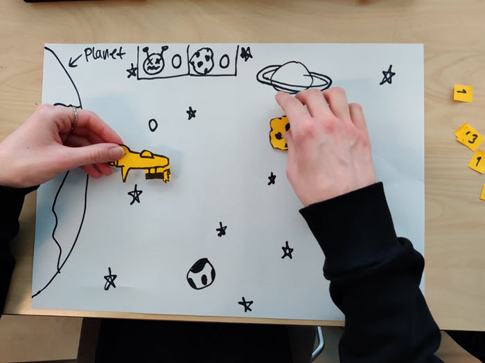
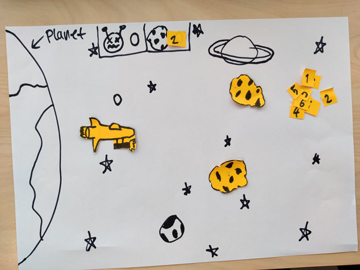
SKITSER
Thumbnail skitser (1)
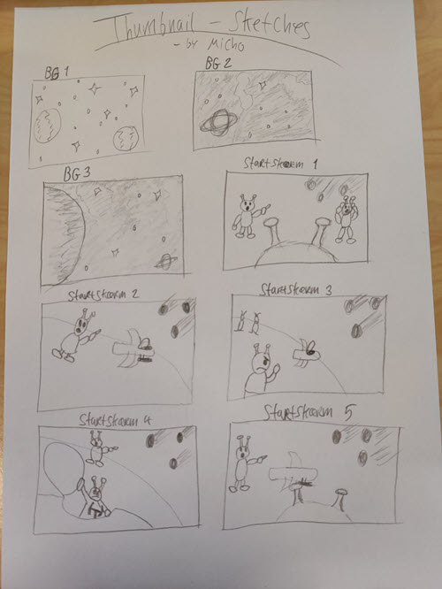
Thumbnail skitser (2)
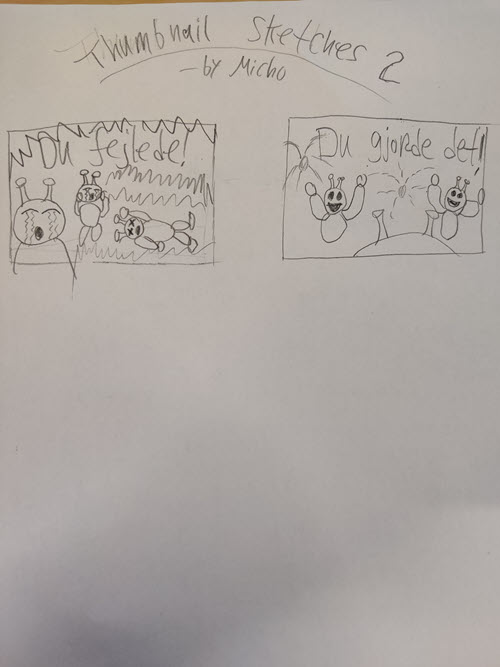
Star skærm
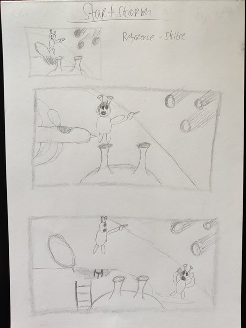
Game-over skærm
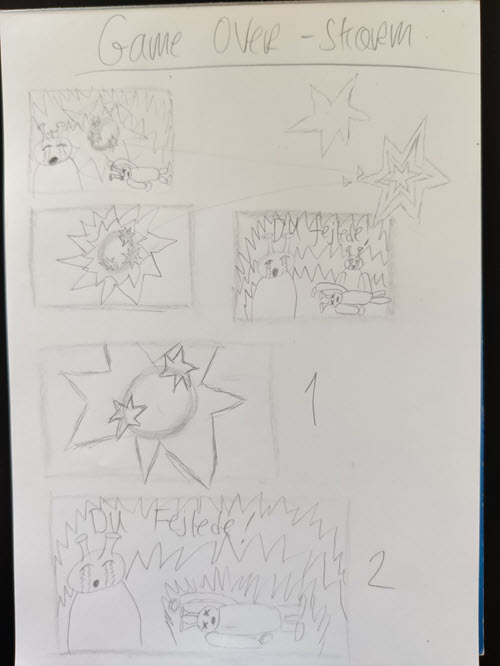
Level-complete skærm
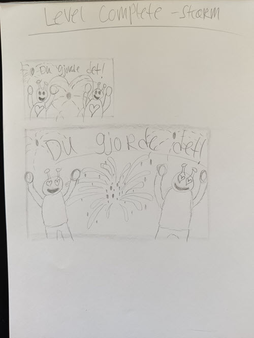
Rumskib
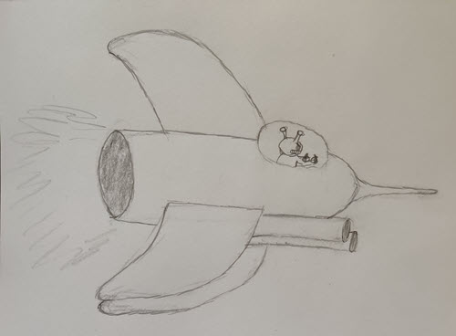
Rumskib og planeter
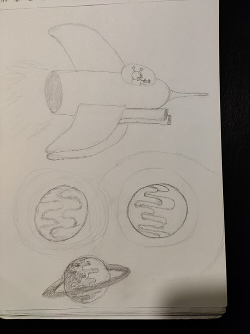
INSPIRATION
Flat-design eksplosion
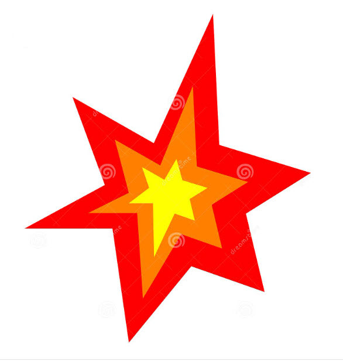
Flat-design fyrværkeri (1)
Flat-design fyrværkeri (2)
Flat-design fyrværkeri meteor (1)
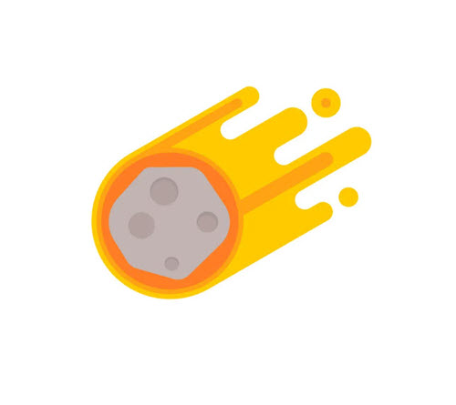
Flat-design fyrværkeri meteor (2)
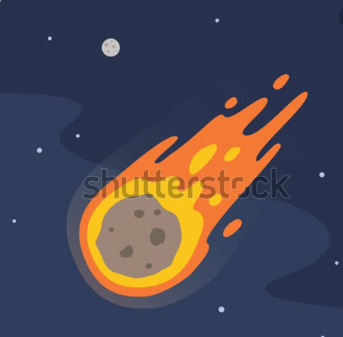
Flat-design af "Space stuff" (Youtube-tutorial)
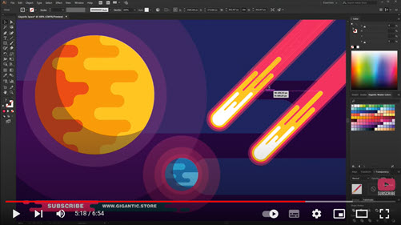
Stjernehimmel
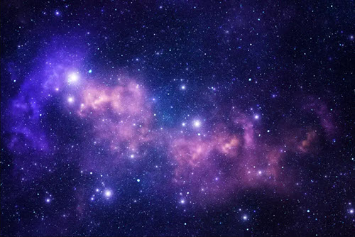